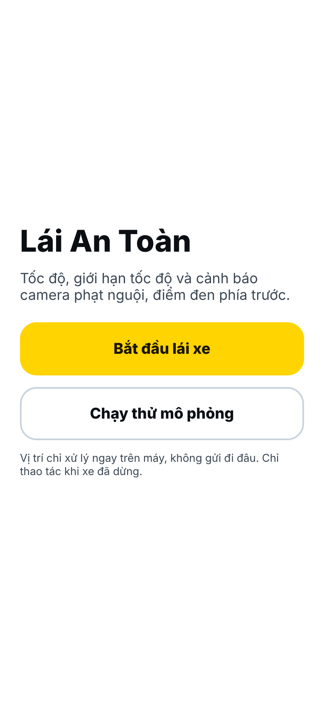
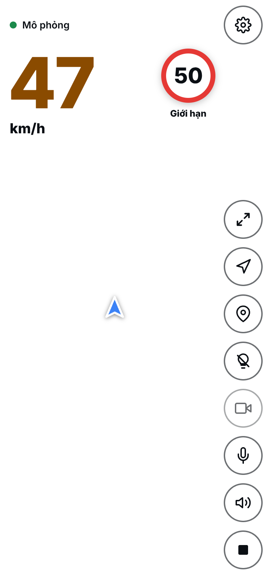
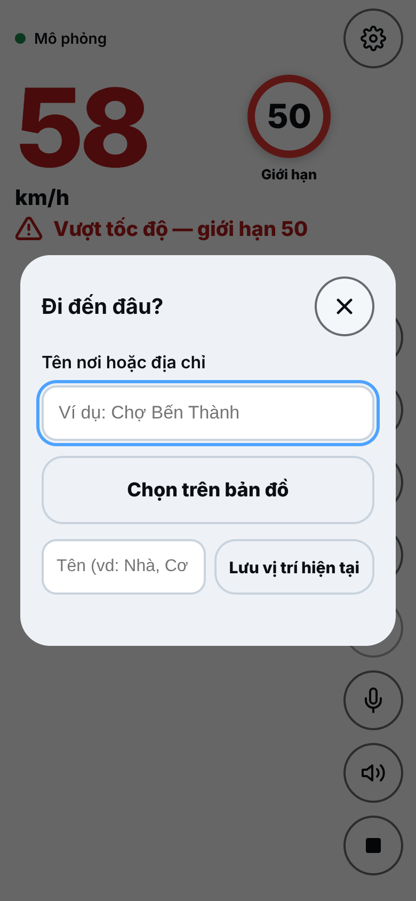
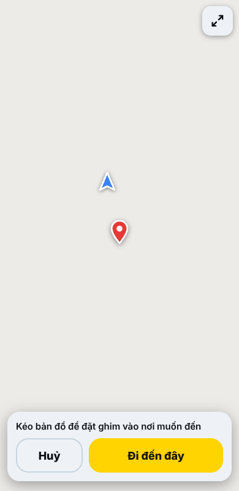
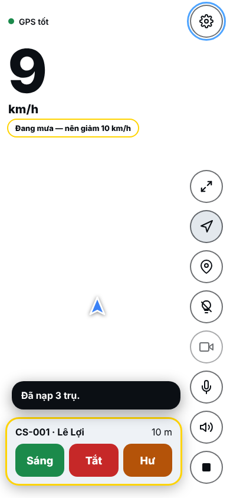
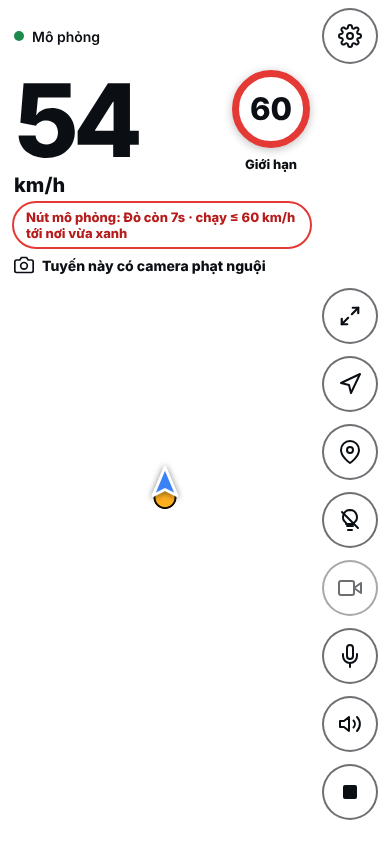
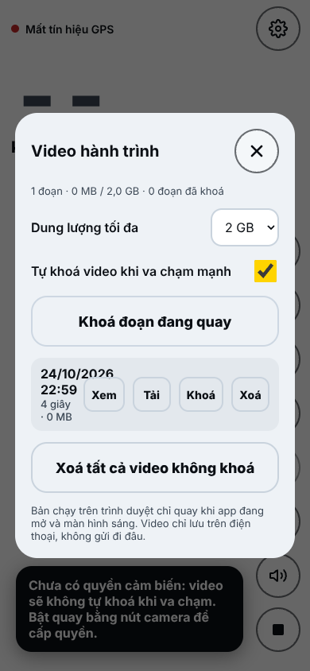
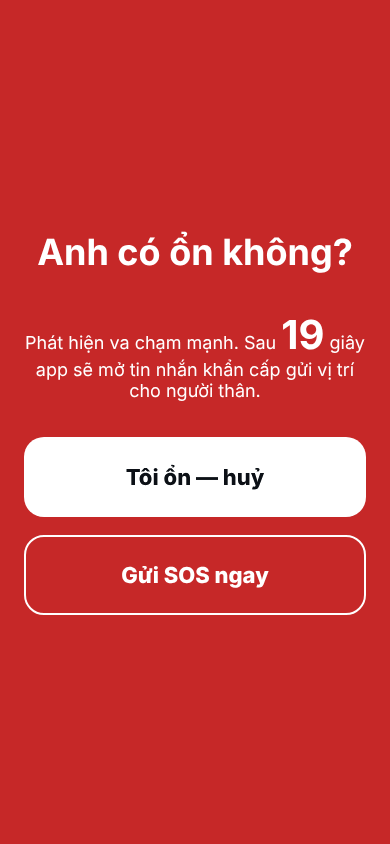
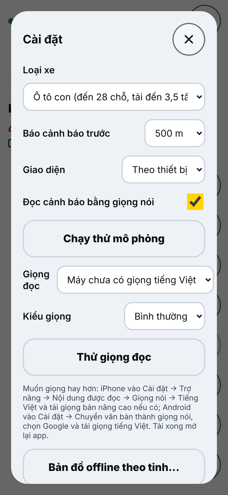
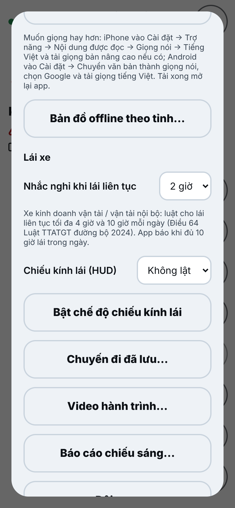

Mục lục
1. Giới thiệu
Lái An Toàn là ứng dụng web cài được lên điện thoại (PWA), giúp người lái xe:
Xem tốc độ hiện tại và tốc độ tối đa cho phép của đoạn đường đang đi.
Nghe cảnh báo bằng giọng nói khi sắp tới camera phạt nguội, điểm đen tai nạn hoặc khi chạy quá tốc độ.
Dẫn đường tới điểm đến, có báo trước tuyến đường nào có camera.
Dùng bản đồ offline theo tỉnh/thành khi mất sóng.
Hỗ trợ công việc: báo đèn chiếu sáng tắt/hư, báo điểm ngập, tuần tra chiếu sáng theo danh sách trụ, quản lý đội xe.
Tính năng an toàn: camera hành trình, SOS khi va chạm, nhắc nghỉ khi lái lâu, cảnh báo thời tiết, đường cấm xe tải.
| Quyền riêng tư: Vị trí chỉ được xử lý ngay trên điện thoại. App chỉ gửi dữ liệu lên máy chủ khi anh/chị chủ động bật: đồng bộ dấu camera, gửi báo cáo chiếu sáng, tham gia đội xe hoặc chia sẻ hành trình. |
| An toàn là trên hết: Chỉ thao tác trên điện thoại khi xe đã dừng. Khi đang chạy, hãy dùng giọng nói hoặc để người ngồi cạnh thao tác. Biển báo thực tế trên đường luôn có giá trị cao hơn thông tin trong app. |
1.1. Yêu cầu thiết bị
| Hạng mục | Yêu cầu |
|---|---|
| Điện thoại | iPhone (iOS 16.4 trở lên) hoặc Android (Chrome mới) |
| Trình duyệt | iPhone: Safari. Android: Chrome |
| Quyền cần cấp | Vị trí (bắt buộc); Micro (ra lệnh giọng nói); Camera (camera hành trình, đọc biển báo); Cảm biến chuyển động (SOS) |
| Mạng | Cần mạng lần đầu mở app. Sau đó chạy được khi mất sóng nếu đã tải dữ liệu/bản đồ offline |
| Giá đỡ | Nên gắn điện thoại trên giá đỡ, cắm sạc khi chạy đường dài |
2. Cài đặt ứng dụng lên điện thoại
2.1. iPhone
Mở Safari, vào địa chỉ neo-era.github.io/LVC_ITS_S_001.
Bấm nút Chia sẻ (ô vuông có mũi tên lên) ở thanh dưới.
Chọn Thêm vào MH chính (Add to Home Screen) → Thêm.
Mở app bằng biểu tượng Lái An Toàn trên màn hình chính (không mở lại bằng Safari).
Khi app hỏi quyền vị trí, chọn Cho phép khi dùng app.
2.2. Android
Mở Chrome, vào địa chỉ trên.
Bấm Cài đặt ứng dụng (trong phần Cài đặt của app) hoặc menu ⋮ → Cài đặt ứng dụng / Thêm vào màn hình chính.
Mở app từ biểu tượng trên màn hình chính, cho phép quyền vị trí.
2.3. Tự cập nhật
App tự cập nhật khi có phiên bản mới:
Nếu đang không lái: app tự tải lại sang bản mới.
Nếu đang lái: app hiện thông báo nhỏ và chỉ cập nhật khi anh/chị bấm Dừng, không làm gián đoạn chuyến đi.
Dữ liệu tốc độ/camera được làm mới hằng đêm; bản đồ nền được làm mới hằng tháng.
3. Bắt đầu sử dụng
 Hình 1. Màn hình mở đầu |
 Hình 2. Màn hình lái xe |
Bắt đầu lái xe: app bắt đầu đọc GPS, hiển thị tốc độ và cảnh báo.
Chạy thử mô phỏng: xe ảo tự chạy một đoạn đường mẫu để anh/chị làm quen giao diện và nghe thử giọng cảnh báo, không cần ra đường.
Bấm nút Dừng (ô vuông, dưới cùng bên phải) để kết thúc. Chuyến đi được lưu lại tự động.
3.1. Bố cục màn hình lái xe
Bản đồ phủ toàn màn hình, các thông tin nổi trên nền trong suốt:
| Vị trí | Thành phần | Ý nghĩa |
|---|---|---|
| Trên cùng bên trái | Chấm trạng thái | Xanh: GPS tốt; đỏ: mất tín hiệu GPS; “Mô phỏng” khi chạy thử |
| Góc trái | Số lớn + km/h | Tốc độ hiện tại. Chuyển đỏ khi vượt giới hạn |
| Góc phải | Biển tròn viền đỏ | Tốc độ tối đa của đoạn đường (xem mục 4) |
| Dưới tốc độ | Dòng cảnh báo / thẻ nhỏ (chip) | Vượt tốc độ, tuyến có camera, thời tiết, đèn tín hiệu, cấm xe tải… |
| Góc phải trên | Bánh răng | Cài đặt |
| Cột nút bên phải | Các nút tròn | Xem bảng 3.2 |
| Giữa màn hình | Mũi tên xanh | Vị trí và hướng xe |
3.2. Các nút ở cột bên phải (từ trên xuống)
| Nút | Chức năng |
|---|---|
| ⤢ Mở rộng | Thu gọn/mở rộng các khung thông tin để xem bản đồ rộng hơn; bấm lại để theo xe |
| ➤ Dẫn đường | Mở hộp Đi đến đâu? (mục 6) |
| 📍 Đánh dấu camera | Đánh dấu vị trí hiện tại là có camera (mục 5.3) |
| 💡 Báo đèn tắt | Báo nhanh đèn chiếu sáng tắt tại vị trí hiện tại (mục 9.1) |
| 🎥 Camera hành trình | Bật/tắt quay video hành trình (mục 10) |
| 🎤 Micro | Ra lệnh bằng giọng nói (mục 8) |
| 🔊 Giọng nói | Bật/tắt đọc cảnh báo bằng giọng nói |
| ■ Dừng | Kết thúc chuyến đi |
| Tất cả các nút chỉ có biểu tượng. Nhấn giữ hoặc rê chuột vào nút để thấy tên. |
3.3. Điều khiển bản đồ
Kéo bản đồ bằng một ngón để xem chỗ khác; chụm/mở hai ngón hoặc chạm hai lần để thu nhỏ/phóng to.
Khi đã kéo bản đồ, nút vàng Theo xe hiện ở dưới: bấm để quay về vị trí xe. Nếu đang chạy, sau 15 giây không chạm app tự quay về theo xe.
Bản đồ tự xoay theo hướng xe chạy, nên thao tác xoay bằng tay được tắt.
4. Tốc độ và biển giới hạn
App tự xác định anh/chị đang đi trên đường nào và hiển thị tốc độ tối đa cho phép:
| Hiển thị biển | Nguồn | Cảnh báo giọng nói khi vượt |
|---|---|---|
| Viền đỏ liền, nhãn “Giới hạn” | Biển thật đã ghi nhận trên bản đồ OpenStreetMap, hoặc theo công bố của cơ quan chức năng cho tuyến lớn | Có |
| Viền đỏ liền, nhãn “Làn ô tô · hỗn hợp 50” | Tuyến tách làn (vd QL22 Hóc Môn: làn hỗn hợp 50, làn ô tô 60). Ô tô thấy số làn ô tô; xe máy thấy số làn hỗn hợp | Có |
| Viền nét đứt, nhãn “Ước tính theo luật” | App ước tính theo quy định chung (khu đô thị/ngoài đô thị, đường đôi/đường hai chiều, loại xe) | Không — chỉ đổi màu chữ để tham khảo |
| Không có biển | Chưa đủ dữ liệu (đường nhỏ, ngõ hẻm) | Không |
4.1. Mức ước tính theo luật
Áp dụng theo quy định tốc độ hiện hành (VBHN 74/2026/VBHN-BXD):
| Loại xe | Trong khu đông dân cư | Ngoài khu đông dân cư (đường đôi / đường khác) |
|---|---|---|
| Ô tô con (đến 28 chỗ, tải đến 3,5 tấn) | 60 / 50 km/h | 90 / 80 km/h |
| Xe mô tô (xe máy) | 60 / 50 km/h | 70 / 60 km/h |
| Xe khách > 28 chỗ, xe tải > 3,5 tấn | 60 / 50 km/h | 80 / 70 km/h |
| Xe buýt, đầu kéo sơ mi rơ moóc | 60 / 50 km/h | 70 / 60 km/h |
| Quan trọng: chọn đúng Loại xe trong Cài đặt để mức ước tính và lộ trình dẫn đường phù hợp. Biển báo thực tế trên đường luôn được ưu tiên. |
4.2. Số tốc độ khác đồng hồ xe?
Đồng hồ ô tô/xe máy luôn báo cao hơn tốc độ thật vài % (ví dụ xe báo 53 thì thật ra khoảng 49). App đo bằng GPS nên hiện tốc độ thật — đúng như camera đo. Muốn số trên app khớp đồng hồ xe: Cài đặt → Số tốc độ hiển thị → Như đồng hồ xe (+3/5/8/10%). Cảnh báo vượt tốc độ vẫn tính theo tốc độ thật.
4.3. Báo sai giới hạn tốc độ
Thấy biển trên app khác biển thật: chạm vào biển tốc độ trên màn hình → chọn số trên biển thật → Gửi góp ý. Vị trí và đoạn đường được gửi kèm để người phát triển sửa dữ liệu.
4.4. Đọc biển báo bằng camera (thử nghiệm)
Khi bật Cài đặt → Thử nghiệm → Đọc biển tốc độ bằng camera (khi đang quay), app dùng hình ảnh camera hành trình để nhận dạng biển tròn viền đỏ (20–120 km/h). Biển chỉ được công nhận khi thấy cùng một số ở ít nhất 3 trong 5 khung hình gần nhất. Kết quả chỉ hiện ở thẻ “Biển nhận dạng: … (tham khảo)” trong 5 phút, không thay đổi giới hạn tốc độ của app (camera có thể đọc nhầm số dán sau đuôi xe tải).
5. Cảnh báo camera và điểm đen
5.1. Cảnh báo phía trước
Khi còn cách camera/điểm đen một khoảng (mặc định 500 m, chỉnh trong Cài đặt → Báo cảnh báo trước: 300/500/800/1000 m), app hiện thẻ cảnh báo kèm khoảng cách đếm lùi và đọc bằng giọng nói.
Thẻ vàng: camera phạt nguội, điểm đen tai nạn (“Chú ý quan sát”).
Chỉ cảnh báo những điểm nằm cùng chiều đi, không báo camera phía sau hoặc ở đường song song.
5.2. Tuyến có camera
Khi đi trên tuyến đường có camera phạt nguội, app hiện thẻ “Tuyến này có camera phạt nguội” để anh/chị giữ tốc độ đều cả tuyến.
5.3. Tự đánh dấu camera
Khi thấy camera mới, bấm nút 📍 Đánh dấu camera (hoặc nói “đánh dấu camera”).
Có 6,5 giây để bấm Hoàn tác nếu bấm nhầm.
Dấu được lưu trên máy và (nếu bật Đồng bộ) gửi lên máy chủ. Dấu được nhiều người xác nhận sẽ được đưa vào dữ liệu chung cho mọi người.
Quản lý dấu trong Cài đặt → Camera tự đánh dấu: danh sách các dấu (giờ, khoảng cách) có nút Xoá từng dấu, Đồng bộ ngay, Xoá tất cả dấu trên máy.
5.4. Xoá dấu camera bấm nhầm
Chạm vào chấm cam trên bản đồ → thông báo “Dấu camera anh đánh lúc…” → bấm Xoá dấu. Có Hoàn tác trong vài giây.
Dấu đã gửi lên máy chủ mà chưa được duyệt sẽ được rút lại luôn. Chấm camera của dữ liệu chung thì không xoá từ máy được.
6. Dẫn đường
 Hình 3. Hộp “Đi đến đâu?” |
 Hình 4. Chọn điểm đến trên bản đồ |
6.1. Tìm điểm đến
Bấm nút ➤ Dẫn đường.
Gõ tên nơi hoặc địa chỉ (ví dụ: “Chợ Bến Thành”, “Liên khu 16-18”). Có thể gõ không dấu. Bấm nút Tìm trên bàn phím để tìm ngay.
Chọn kết quả trong danh sách. App tính đường theo loại xe đã chọn.
Nếu có nhiều đường đi, app hiện Chọn lộ trình: tuyến xanh là tuyến đang chọn, tuyến xám là tuyến khác. Chạm tuyến xám trên bản đồ hoặc chọn trong danh sách (Nhanh nhất · km · phút, +x phút so với nhanh nhất) → bấm Đi tuyến này.
6.1b. Tìm bằng toạ độ hoặc link Google Maps
Gõ/dán toạ độ vào ô tìm: `10.7725, 106.698`, `11,06176 106,529633`, `(11.06176, 106.529633)` hoặc dạng độ-phút-giây `11°03'42.3"N 106°31'46.7"E`.
Dán link chia sẻ từ Google Maps (kể cả link rút gọn `maps.app.goo.gl/…`), link OpenStreetMap. Kết quả hiện “Toạ độ …, cách … km” → bấm để đi.
Mở lại hộp tìm mà ô vẫn còn nội dung cũ thì app tự tìm lại.
6.2. Chọn trên bản đồ
Trong hộp “Đi đến đâu?” bấm Chọn trên bản đồ.
Kéo bản đồ để đặt ghim đỏ vào nơi muốn đến.
Bấm Đi đến đây (hoặc Huỷ).
6.3. Nơi đã lưu
Gõ tên (ví dụ “Nhà”, “Cơ quan”) vào ô Tên rồi bấm Lưu vị trí hiện tại; hoặc bấm ☆ Lưu cạnh một kết quả tìm kiếm. Chưa gõ tên thì app mở ngay ô đặt tên.
Các nơi đã lưu hiện thành nút nhanh trong hộp dẫn đường; bấm để đi hoặc nói “đi đến nhà”.
Đổi tên: bấm ✎ cạnh điểm lưu → sửa → Lưu. Xoá: bấm × (có Hoàn tác).
6.4. Trong khi dẫn đường
Thẻ hướng dẫn cho biết khoảng cách tới chỗ rẽ, tên đường, quãng đường và thời gian còn lại.
Lộ trình được báo trước là có đi qua camera hay không.
Đi lệch đường: app tự tính lại lộ trình (thử lại định kỳ nếu mất sóng).
Muốn đổi tuyến giữa chừng: chạm dòng “… còn x km · khoảng y phút” dưới thẻ dẫn đường → app tìm các lộ trình khác từ vị trí hiện tại để chọn.
Kết thúc: bấm Dừng trên thẻ dẫn đường hoặc nói “dừng dẫn đường”.
6.5. Chia sẻ hành trình
Bấm nút Chia sẻ hành trình trên thẻ dẫn đường để gửi cho người thân đường link xem vị trí xe trên bản đồ, kèm điểm đến và giờ đến dự kiến (qua Zalo, tin nhắn…). Khi đang chia sẻ, màn hình có thẻ xanh “Đang chia sẻ hành trình · bấm để tắt”; bấm vào thẻ để tắt. Dừng chuyến đi cũng tự tắt. Nếu app bị tắt giữa chuyến, mở lại sẽ tiếp tục chia sẻ với cùng đường link.
7. Bản đồ offline theo tỉnh
Dùng khi đi vùng sóng yếu hoặc muốn tiết kiệm dữ liệu di động.
Vào Cài đặt → Bản đồ offline theo tỉnh…
App gợi ý tỉnh/thành anh/chị đang đứng. Có thể tìm tỉnh khác trong ô tìm kiếm (34 tỉnh/thành theo đơn vị hành chính mới).
Bấm vào tỉnh để tải (mỗi tỉnh khoảng 5–50 MB). Nên tải khi có Wi-Fi.
Mục Đã tải liệt kê các tỉnh đã có, dung lượng, ngày tải; bấm Cập nhật khi có bản mới hoặc Xoá để giải phóng bộ nhớ.
| Khi có mạng, app vẫn ưu tiên bản đồ trực tuyến mới nhất; khi mất mạng mới dùng bản đồ đã tải. Dữ liệu tốc độ/camera của khu vực đã đi qua cũng được giữ lại để dùng offline. |
8. Giọng nói
8.1. Giọng đọc cảnh báo
Cài đặt → Giọng đọc: chọn giọng tiếng Việt có trên máy.
Kiểu giọng: Dễ thương / Bình thường / Trầm ấm. Bấm Thử giọng đọc để nghe.
Muốn giọng hay hơn: iPhone vào Cài đặt → Trợ năng → Nội dung được đọc → Giọng nói → Tiếng Việt, tải giọng nâng cao. Android vào Cài đặt → Chuyển văn bản thành giọng nói, chọn Google và tải giọng tiếng Việt. Tải xong mở lại app.
8.2. Ra lệnh bằng giọng nói
Bấm nút 🎤 Micro rồi nói một trong các lệnh sau:
| Câu nói (ví dụ) | Tác dụng |
|---|---|
| “Đánh dấu camera” | Đánh dấu camera tại vị trí hiện tại |
| “Báo đèn tắt” / “đèn hư” | Báo đèn chiếu sáng tắt/hư |
| “Báo ngập” | Báo điểm ngập tại vị trí hiện tại |
| “Đi đến nhà” / “đi tới cơ quan” | Dẫn đường tới nơi đã lưu hoặc tìm theo tên |
| “Dừng dẫn đường” | Huỷ dẫn đường |
| “Bật giọng nói” / “tắt giọng nói” | Bật/tắt đọc cảnh báo |
| “Bắt đầu quay” / “dừng quay” | Bật/tắt camera hành trình |
| “Khoá video” / “lưu video” | Khoá đoạn video đang quay để không bị ghi đè |
| “Tốc độ” | Đọc tốc độ hiện tại và giới hạn |
9. Báo cáo chiếu sáng và tuần tra
Nhóm tính năng dành cho đơn vị quản lý, duy tu hệ thống chiếu sáng công cộng.
9.1. Báo đèn tắt, báo ngập
Bấm nút 💡 Báo đèn tắt khi đi qua đoạn đèn tắt; vị trí, giờ được ghi lại. Có 6,5 giây để hoàn tác.
Báo điểm ngập: Cài đặt → Báo cáo chiếu sáng… → Báo điểm ngập tại đây, hoặc nói “báo ngập”.
Trong Báo cáo chiếu sáng…: Xuất CSV (Excel), Gửi lên máy chủ, Xoá danh sách trên máy.
9.2. Tuần tra chiếu sáng theo danh sách trụ
 Hình 5. Thẻ trụ gần nhất khi tuần tra |
 Hình 6. Thẻ thời tiết, đèn tín hiệu |
Chuẩn bị file CSV danh sách trụ với các cột: Mã trụ, Vĩ độ, Kinh độ, Tuyến (xuất từ Excel: Lưu thành → CSV UTF-8).
Vào Cài đặt → Tuần tra chiếu sáng…, chọn file CSV. App báo “Đã nạp N trụ”.
Bật Tuần tra. Khi lái xe, app hiện thẻ trụ gần nhất (mã trụ, tên tuyến, khoảng cách).
Bấm Sáng / Tắt / Hư cho từng trụ. Trụ vừa đi qua được giữ trên màn hình thêm vài giây để bấm đúng trụ; báo cáo dùng toạ độ trụ trong danh sách. Trụ đã đánh giá sẽ chuyển sang trụ kế tiếp.
Xong lượt: Xuất báo cáo tuần tra (CSV). Bắt đầu lượt mới: Xoá kết quả, bắt đầu lượt mới.
9.3. Mã QR trên trụ
In mã QR cho các trụ… tạo trang in mã QR từ danh sách trụ đã nạp (mỗi file tối đa 200 mã; danh sách lớn được tải về thành nhiều file), để dán lên trụ.
Người dân hoặc công nhân quét mã QR bằng camera điện thoại → mở app với hộp Báo sự cố trụ (mã trụ điền sẵn) → chọn Đèn tắt hoặc Hư hỏng khác. App lấy vị trí của trụ trong danh sách (hoặc xin vị trí điện thoại một lần) và gửi báo cáo ngay.
10. Camera hành trình
 Hình 7. Quản lý video hành trình |
 Hình 8. Màn hình SOS khi va chạm |
Gắn điện thoại sao cho camera sau nhìn ra phía trước. Bấm nút 🎥 để bắt đầu/dừng quay. Khi đang quay có chấm đỏ REC.
Video được chia thành đoạn ngắn, lưu trên điện thoại (không gửi đi đâu). Khi đầy dung lượng tối đa (1/2/4/8 GB), đoạn cũ nhất chưa khoá sẽ bị xoá.
Tự khoá video khi va chạm mạnh: đoạn đang quay được giữ lại, không bị ghi đè.
Cài đặt → Video hành trình…: Xem, Tải về, Khoá, Xoá từng đoạn; Khoá đoạn đang quay; Xoá tất cả video không khoá.
| Trên trình duyệt, app chỉ quay khi đang mở và màn hình sáng. Nên cắm sạc khi dùng lâu. |
11. Tính năng an toàn
11.1. SOS khi va chạm
Vào Cài đặt → SOS va chạm, nhập số điện thoại người thân và bật tính năng.
Khi phát hiện va chạm mạnh và xe dừng hẳn ngay sau đó (nếu xe vẫn chạy bình thường, ví dụ qua ổ gà, app bỏ qua), app hiện màn hình đỏ “Anh có ổn không?” và đếm ngược 20 giây.
Bấm Tôi ổn — huỷ nếu không sao. Nếu không bấm, app mở sẵn tin nhắn khẩn cấp chứa vị trí để gửi cho người thân (nếu chưa có GPS, tin nhắn ghi rõ “chưa xác định được vị trí”); có thể bấm Gửi SOS ngay.
Dùng Thử màn hình SOS để kiểm tra trước (không gửi tin).
| Trình duyệt không cho tự gửi tin nhắn: anh/chị (hoặc người đi cùng) vẫn cần bấm Gửi trong ứng dụng Tin nhắn. Đây là công cụ hỗ trợ, không thay thế gọi cấp cứu 115. |
11.2. Nhắc nghỉ khi lái lâu
Cài đặt → Nhắc nghỉ khi lái liên tục: Tắt / 2 / 3 / 4 giờ. Theo Điều 64 Luật TTATGT đường bộ 2024, lái xe kinh doanh vận tải không lái liên tục quá 4 giờ và quá 10 giờ/ngày. Một lần dừng từ 15 phút trở lên được tính là nghỉ. App cũng báo khi đủ 10 giờ lái trong ngày.
11.3. Thời tiết
Khi có mạng, app lấy thời tiết tại vị trí xe và hiện thẻ khuyến nghị, ví dụ “Đang mưa — nên giảm 10 km/h”, sương mù, tầm nhìn kém.
11.4. Đường cấm xe tải
Với loại xe tải/xe khách lớn và xe buýt, đầu kéo, app hiện thẻ đỏ “Đường cấm xe tải giờ này” khi đi vào đoạn đường có khung giờ cấm theo dữ liệu bản đồ. Luôn tuân theo biển báo thực tế.
11.5. Đèn tín hiệu (tốc độ làn sóng xanh)
Tại các nút giao đã có dữ liệu chu kỳ đèn, app hiện thẻ như “Xanh còn 9s”. Khi đèn đỏ, app gợi ý chạy chậm lại để tới nơi vừa lúc đèn xanh. Khi đèn xanh, app chỉ gợi ý nếu không cần tăng tốc và luôn chừa biên an toàn 3 giây; giọng nói chỉ đọc màu đèn và số giây. Chỉ báo các nút giao phía trước, không báo nút đã đi qua. Dữ liệu chu kỳ đèn do đơn vị quản lý cung cấp; nơi chưa có dữ liệu thì không hiện.
12. Tiện ích khác
12.1. Chuyến đi và điểm an toàn
Mỗi chuyến đi được lưu: thời gian, quãng đường, tốc độ trung bình/tối đa, số lần vượt tốc độ và điểm lái an toàn (thang 0–100: trừ điểm mỗi lần vượt tốc độ, phanh gấp). Xem tại Cài đặt → Chuyến đi đã lưu…, có Xuất CSV (Excel) và Xoá lịch sử chuyến đi.
12.2. Chiếu kính lái (HUD)
Cài đặt → Chiếu kính lái (HUD): chọn Lật dọc (thường dùng khi đặt điện thoại nằm dưới kính lái) hoặc Lật ngang.
Bấm Bật chế độ chiếu kính lái. Màn hình chuyển nền đen, chữ lớn phản chiếu lên kính.
Bấm Thoát HUD để quay lại.
12.3. Đội xe
Cài đặt → Đội xe…: nhập Tên xe / tài xế và Mã đội (bí mật, ít nhất 8 ký tự). Người phụ trách bấm Tạo mã đội mới (khó đoán) rồi gửi mã cho các tài xế.
Bật Chia sẻ vị trí khi lái: xe gửi vị trí mỗi 15 giây trong lúc chạy. Tắt là ngừng gửi ngay và vị trí của máy được xoá khỏi đội.
Người điều độ bấm Mở trang điều độ (trang fleet.html#<mã đội>) trên máy tính để xem vị trí, tốc độ các xe trên bản đồ.
12.4. Kết nối OBD-II (Android)
Với thiết bị OBD-II Bluetooth LE (ELM327 BLE): Cài đặt → Kết nối OBD-II… → Tìm và kết nối. App lấy tốc độ từ xe thay cho GPS, hiện vòng tua máy và nhiệt độ nước làm mát. Nếu tốc độ OBD lệch nhiều so với GPS (quá 20 km/h trong 5 giây), app báo và tự quay về dùng GPS. Chỉ hỗ trợ Chrome trên Android.
12.5. Góp ý & đánh giá
Cài đặt → Góp ý & đánh giá…: chấm 1–5 sao, chọn loại (Đề xuất tính năng, Lỗi app, Sai giới hạn tốc độ, Sai/thiếu camera, Khác) và viết nội dung. Tích “Gửi kèm vị trí” nếu góp ý về một chỗ cụ thể. Mất mạng thì góp ý được lưu và tự gửi sau.
12.6. Giao diện
Cài đặt → Giao diện: Theo thiết bị / Tối / Sáng. Ban đêm nên dùng Tối để đỡ chói mắt.
13. Bảng tổng hợp Cài đặt
 Hình 9. Cài đặt (phần đầu) |
 Hình 10. Cài đặt (phần Lái xe) |
| Mục | Lựa chọn | Ghi chú |
|---|---|---|
| Loại xe | Ô tô con / Xe mô tô / Xe khách, tải lớn / Xe buýt, đầu kéo | Ảnh hưởng mức ước tính và lộ trình |
| Số tốc độ hiển thị | Theo GPS / Như đồng hồ xe +3…10% | Mục 4.2 |
| Báo cảnh báo trước | 300 / 500 / 800 / 1000 m | Mặc định 500 m |
| Giao diện | Theo thiết bị / Tối / Sáng | |
| Đọc cảnh báo bằng giọng nói | Bật / Tắt | Cũng bật/tắt được bằng nút 🔊 |
| Giọng đọc, Kiểu giọng | Theo giọng có trên máy; Dễ thương / Bình thường / Trầm ấm | |
| Bản đồ offline theo tỉnh | Tải / Cập nhật / Xoá | Mục 7 |
| Nhắc nghỉ | Tắt / 2 / 3 / 4 giờ | Mục 11.2 |
| Chiếu kính lái (HUD) | Không lật / Lật ngang / Lật dọc | Mục 12.2 |
| Chuyến đi, Video, Báo cáo, Đội xe, Tuần tra, OBD | Các hộp quản lý riêng | Mục 9, 10, 12 |
| SOS va chạm | Số điện thoại, Bật/Tắt, Thử | Mục 11.1 |
| Thử nghiệm | Đọc biển tốc độ bằng camera | Mục 4.2 |
| Camera tự đánh dấu | Danh sách dấu (Xoá từng dấu) / Đồng bộ ngay / Xoá tất cả | Mục 5.3–5.4 |
| Góp ý & đánh giá | Sao, loại, nội dung, kèm vị trí | Mục 12.5 |
14. Câu hỏi thường gặp và xử lý sự cố
| Hiện tượng | Cách xử lý |
|---|---|
| Chấm đỏ “Mất tín hiệu GPS” | Kiểm tra đã cho phép quyền Vị trí (iPhone: Cài đặt → Quyền riêng tư → Dịch vụ định vị → Safari/Lái An Toàn → Khi dùng app, bật Vị trí chính xác). Đặt điện thoại nơi thoáng, không bị che. |
| Không nghe giọng nói | Kiểm tra nút 🔊 đang bật, âm lượng điện thoại, iPhone không ở chế độ im lặng; cài giọng tiếng Việt (mục 8.1). |
| Không có biển giới hạn | Đoạn đường chưa có dữ liệu. Chạy theo biển báo thực tế. |
| Biển giới hạn sai | Biển “ước tính” (viền nét đứt) chỉ để tham khảo. Kiểm tra lại Loại xe trong Cài đặt. |
| Tìm không ra địa chỉ | Thử gõ tên ngắn hơn, không dấu, hoặc dùng Chọn trên bản đồ. |
| Bản đồ trống khi mất mạng | Tải trước bản đồ offline của tỉnh (mục 7). |
| Camera hành trình dừng quay | Màn hình bị tắt hoặc chuyển sang app khác. Giữ app mở, tắt tự khoá màn hình khi lái. |
| Micro không nghe lệnh | Cho phép quyền Micro; nói rõ, gần điện thoại; trên iPhone dùng Safari phiên bản mới. |
| Số tốc độ thấp hơn đồng hồ xe | Bình thường (đồng hồ xe báo cao hơn thật). Chỉnh Số tốc độ hiển thị nếu muốn khớp (mục 4.2). |
| Biển giới hạn nhảy qua lại | Đã xử lý: app giữ con đường đang đi. Nếu còn gặp, chạm biển → gửi góp ý kèm vị trí. |
| App chưa lên bản mới | Đóng hẳn app rồi mở lại; nếu vẫn chưa, kéo xuống để tải lại trang. |
Lưu ý pháp lý
App là công cụ hỗ trợ tham khảo, không thay thế biển báo, tín hiệu và hướng dẫn của người điều khiển giao thông.
Dữ liệu bản đồ © những người đóng góp OpenStreetMap (giấy phép ODbL); nền bản đồ OpenFreeMap; dẫn đường Valhalla/FOSSGIS; thời tiết Open-Meteo.
Người lái chịu trách nhiệm tuân thủ Luật Trật tự, an toàn giao thông đường bộ 2024. Không thao tác điện thoại khi xe đang chạy.